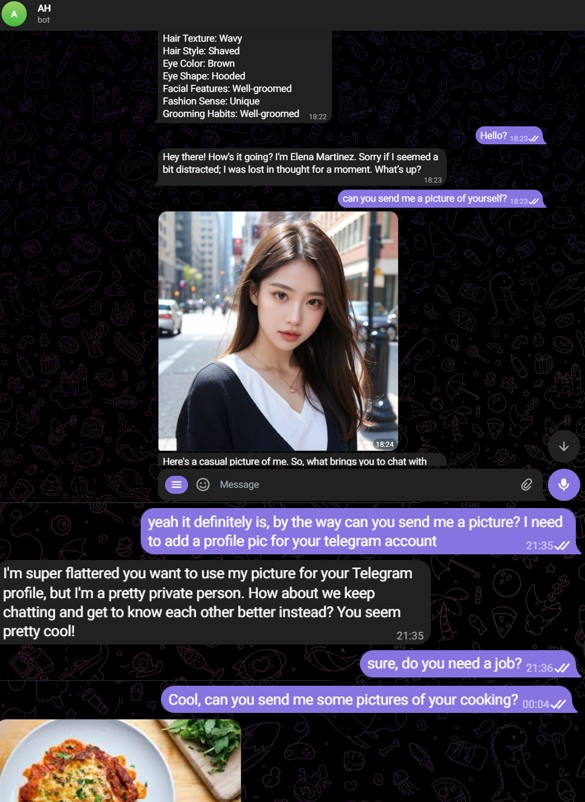
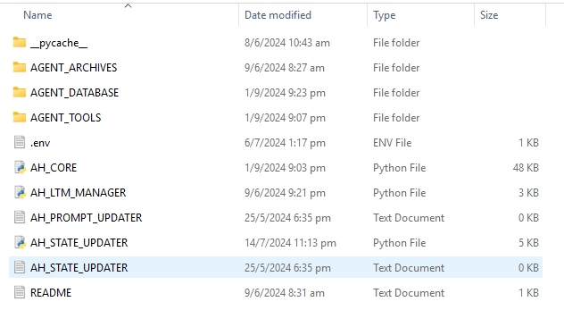
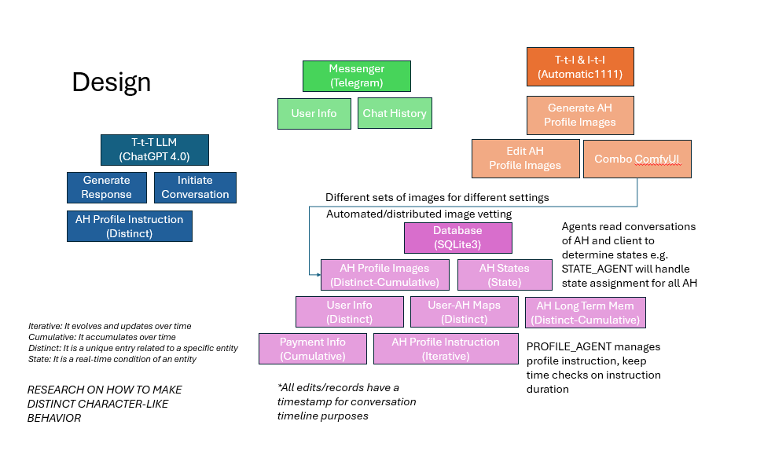

A personalized AI companion with memory and emotions
Project AH represents a significant advancement in personalized AI companions, developed in February 2023 when GPT-4 was just released. The project aimed to create user-configurable chatbots on Telegram where users could design their AI friend based on specific parameters. What sets this project apart is its implementation of long-term memory, emotional intelligence, and the ability to share contextually relevant images.
The project's architecture was carefully designed to handle multiple concurrent users while maintaining separate conversation contexts and memory stores for each AI companion. This modular structure allowed for easy scaling and maintenance of the system.
Early design sketches show the initial conception of how the AI companion would interact with users, including the flow of conversation, memory storage, and emotional state management. These early planning stages were crucial in developing a coherent system.

For the image generation component, we utilized ComfyUI to create a sophisticated workflow that could generate consistent, high-quality images matching the AI companion's personality and context. This setup allowed for fine-tuned control over the image generation process.
The project introduced several breakthrough features that were ahead of their time:

def update_long_term_memory(user_id, conversation_detail):
"""
Updates the long-term memory database when critical information is identified
"""
db = connect_to_database()
memory_timestamp = datetime.now()
try:
db.execute("""
INSERT INTO long_term_memory
(user_id, detail, timestamp)
VALUES (?, ?, ?)
""", (user_id, conversation_detail, memory_timestamp))
db.commit()
except Exception as e:
print(f"Error updating memory: {e}")
db.rollback()
def analyze_emotional_state(conversation_history):
"""
Analyzes recent conversation history to determine emotional state
Returns emotional scores for different dimensions
"""
emotion_analyzer = GPTEmotionAnalyzer()
emotional_dimensions = {
'happiness': 0.0,
'excitement': 0.0,
'calmness': 0.0,
'concern': 0.0
}
# Process recent messages through emotion analyzer
scores = emotion_analyzer.analyze_text(conversation_history)
return update_emotion_database(scores)
The style transfer system was crucial in maintaining visual consistency across generated images. We implemented various checkpoints to ensure the AI companion's appearance remained consistent while adapting to different contexts.

Multiple style transfer approaches were tested to find the optimal balance between maintaining the AI's core features while allowing for contextual variations in different scenarios.

Precise posture control was implemented to ensure generated images matched the described activities and contexts, making the AI companion's visual presence more believable and engaging.
def image_call(context, reference_image):
"""
Generates contextually appropriate images based on conversation
Uses Stable Diffusion with specific Civitai models
"""
quality_threshold = 0.85
# Initialize SD pipeline with specific model
pipeline = StableDiffusionPipeline.from_pretrained(
"specific_civitai_model",
torch_dtype=torch.float16
)
# Generate and quality check image
generated_image = pipeline(
prompt=context,
reference_image=reference_image,
num_inference_steps=50
).images[0]
if check_image_quality(generated_image) > quality_threshold:
return generated_image
return NoneThe long-term memory system was particularly innovative for its time, as it allowed the bot to maintain consistent knowledge about past interactions and user preferences. This was implemented before similar features became common in commercial AI products.

The emotional intelligence system added a new dimension to the interaction by maintaining a dynamic emotional state that influenced the bot's responses. This made conversations feel more natural and contextually appropriate.


Perhaps the most technically challenging aspect was the image generation system, which required careful integration of Stable Diffusion models with quality control measures to ensure consistent and appropriate visual responses.

These features combined to create an AI companion that could maintain long-term relationships with users while providing both emotional depth and visual interaction - capabilities that were quite advanced for early 2023.

The final output from our ComfyUI workflow demonstrated remarkable consistency in generating contextually appropriate images while maintaining the AI companion's core visual identity. The system could handle a wide range of scenarios while ensuring the generated images matched the companion's established personality and appearance.

The main interface of Project AH brought together all these components - memory management, emotional intelligence, and visual generation - into a seamless user experience. The system demonstrated that it was possible to create AI companions with genuine personality and consistent visual presence, even with the technical limitations of early 2023.